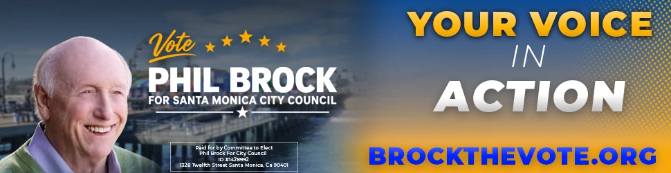
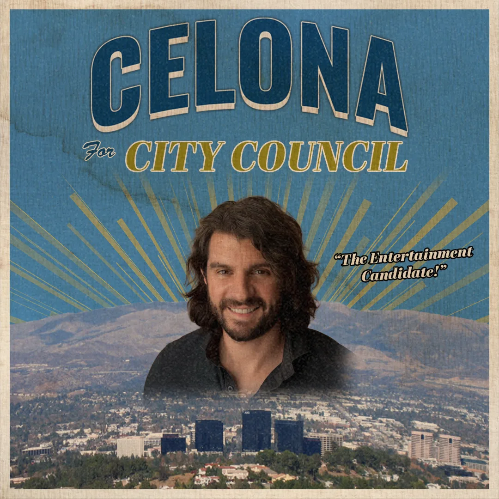
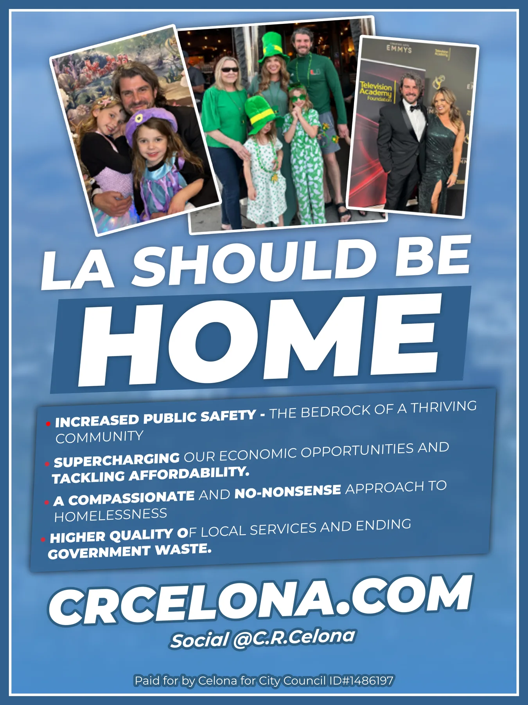
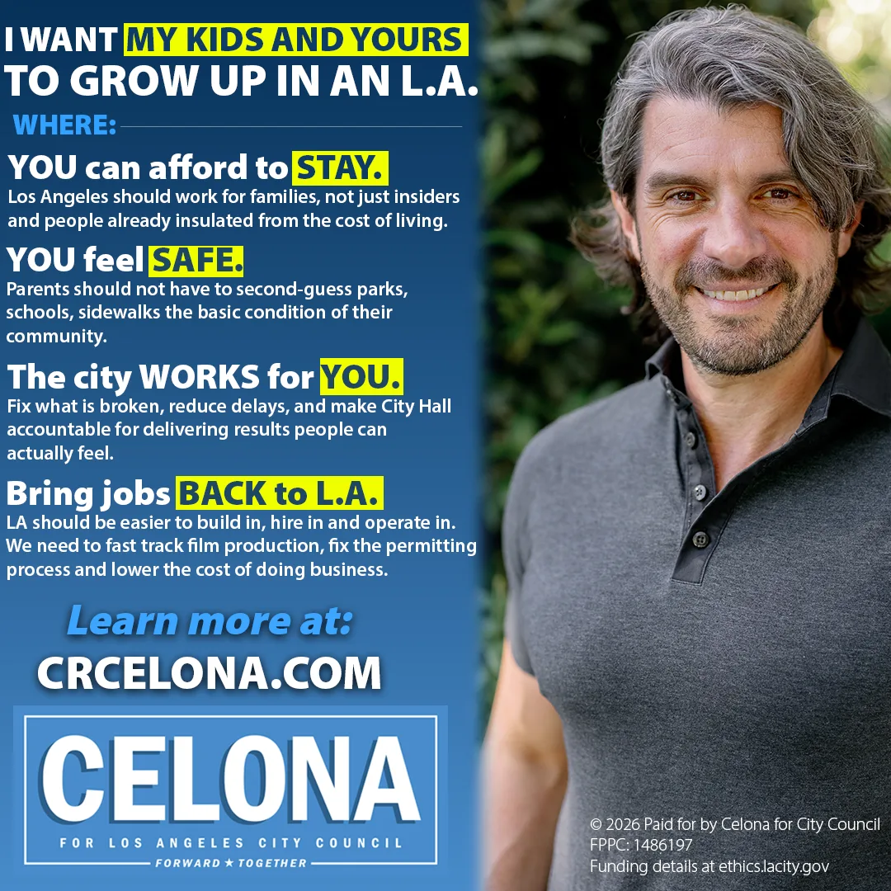

Display advertising · Phil Brock, Santa Monica City Council
“Your Voice in Action”
970×250 web banner driving voters to BrockTheVote.org.
Political campaigns / Creative + technology
Campaign creative, production, and digital infrastructure. Built to stand out. Engineered to keep up.

Display advertising · Phil Brock, Santa Monica City Council
970×250 web banner driving voters to BrockTheVote.org.
Endorsement video · Tim Gaspar, LA City Council CD3
Endorsement announcement with Rick Caruso for Gaspar's Council District 3 campaign in the San Fernando Valley.
Open on Instagram ↗Policy explainer · Tim Gaspar × C.R. Celona
A Star Wars–themed explainer for Gaspar's Jobs and Economic Development Improvement Zone in Canoga Park.
Open on Instagram ↗Issue video · Tim Gaspar
Gaspar's case for bringing film and entertainment production back to Los Angeles and the West Valley.
Open on Instagram ↗Endorsement graphic · Tim Gaspar
Public safety post highlighting Gaspar as the only candidate in the race endorsed by law enforcement.
Open on Instagram ↗Event recap · Tim Gaspar
Recap of the campaign's largest event yet, held at Monty's Steakhouse in the West Valley.
Open on Instagram ↗Endorsement announcement · Tim Gaspar × C.R. Celona
Announcing C.R. Celona's endorsement and his move onto the Gaspar campaign.
Open on Instagram ↗Event recap · Tim Gaspar
Community event recap that doubles as the invite to the next stop in Winnetka.
Open on Instagram ↗Endorsement video · Democrats for Israel Los Angeles
Get-out-the-vote video on Mayor Bass's record with Los Angeles's Jewish community.
Open on Instagram ↗Endorsement · Democrats for Israel Los Angeles
Election-season endorsement graphic for Goldsmith's State Senate District 24 race.
Open on Instagram ↗Digital infrastructure
Connect the creative people see with the accounts, websites, and search presence that support it.
Practical support for the account setup and day-to-day operations behind Facebook and Instagram.
Help people find your campaign and understand what it stands for when they search.
 Open website ↗
Open website ↗
Website
A live campaign website built from scratch for voter-facing communication, credibility, and action.
Visit crcelona.com → Watch Video
Watch Video
 Watch Video
Watch Video
Video
Dory for Congress commercial published online.
Watch on Instagram →
Static Graphic
Vintage-style campaign graphic for Celona for City Council.

Static Graphic
Campaign one-sheet graphic designed for voter-facing messaging.

Static Graphic
Issue-focused digital ad graphic for the Celona campaign.
Static Graphic
Campaign graphic focused on public safety and law enforcement messaging.
Bloomberg CityLab
Media Feature
Client work connected to Bloomberg CityLab coverage on Los Angeles housing, zoning reform, and the city’s future building landscape.
Read on Bloomberg →Long-form policy, economics, and research materials designed to make complex information easier to read, navigate, and share.
 Open website ↗
Open website ↗
Research / Report Design
Designed publication-ready reports for Hilgard Economics, helping turn policy and economic research into clean, professional, public-facing documents.
View Hilgard Economics publications →
Angel Designs LA brings together political messaging, graphic design, video production, and rapid-response content for real campaign environments.
Angel Designs LA is one of the most reliable and creative political media professionals I’ve worked with. They combine strong graphic design skills with the ability to produce practical, effective video content that campaigns can actually use in the field, online, and across social media.
What sets Angel Designs LA apart is that they are not just designers sitting behind a computer. They are hands-on, understand political messaging, and know how to turn ideas into content that connects with voters. Whether it’s campaign graphics, short-form videos, digital ads, event coverage, or rapid-response content, they deliver high-quality work quickly and professionally.
For candidates, causes, consultants, and advocacy organizations looking for someone who understands both creative execution and the realities of political campaigns, I recommend Angel Designs LA without hesitation.
— Dory Benami
Candidate for the United States House of Representatives, California’s 32nd District (2026)
Services
Angel Designs LA combines front-end web development, digital design, production, and data visualization into one practical creative workflow.
Short-form commercial concepts and production for brands, campaigns, products, events, and digital launches.
Feed posts, story graphics, carousels, announcement templates, reel covers, and campaign-ready visual systems.
Logo marks, typography systems, color direction, and visual identity packages.
Custom websites built with clean HTML and CSS instead of generic templates.
Charts, maps, explainers, dashboards, and visual breakdowns that make numbers clear.
In-person filming and original drone footage for commercials, campaigns, events, properties, and digital content.
The asset has to know what it is trying to do before it looks expensive. Every project starts with the audience, platform, message, timeline, and action the viewer should take next.
Is this meant to persuade, announce, explain, convert, document, promote, or sell?
Visual hierarchy, layout, type, footage, data, and copy are organized around the core objective.
Assets are built for the actual channel: website, feed, story, reel, presentation, ad, or live event.
Campaign creative, custom websites, Meta backend support, and search optimization. Tell us what you’re working toward.
milorobanofficial@gmail.com